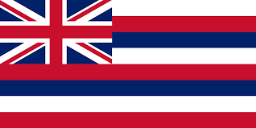
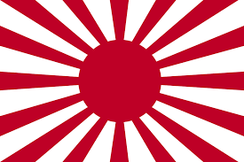
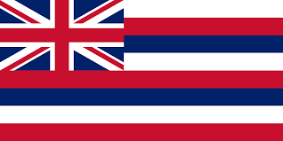
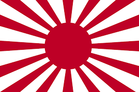
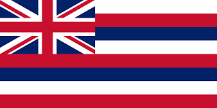
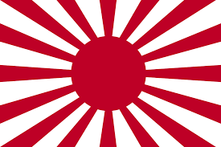
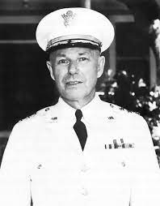
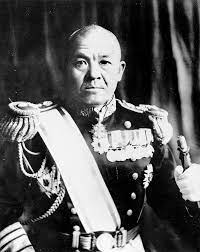
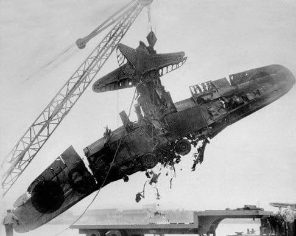
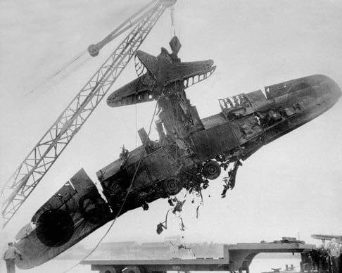

Date: December 7, 1941
Location: Hawaii, Oahu, United States
Countries involved: Japan, United States
  
 
Last updated:18 Feb, 2024
Written by: hwt, 9 Peace
Pearl Harbour Attack on December 7, 1941
History of Japanese-United states history
Category: History & Society
Date: December 7, 1941
Location: Hawaii, Oahu, United States
Countries involved: Japan, United States
 
What happened and who were involved in this attack?
The attack on Pearl Harbor [aka Battle of Pearl Harbour] was a surprise military strike by the Imperial Japanese Navy Air Service upon the United States against the American naval base at Pearl Harbor in Oahu Island, Hawaii, just before 8:00 a.m. (local time) on Sunday, December 7, 1941. At 7.55 am, first wave of attack that consist of 183 aircrafts. The first attack wave were separated into three groups. The first two groups targeted the hangers and the parked aircrafts of Oahu's airbase. The other group targeted the ships (including battleships) and bombed the harbours water with brand new kind of torpedo (Type 91). During the first five minutes of attack, 4 battleships were hit including USS Oklahoma and the USS Arizona which exploded after ten minutes which cruelly killed 1,175 of its crew. At 8.54 am, the second wave included 170 aircraft began their attack again, same as the same wave they have the same target. Athough their attack was so powerful, but their attack went less successful and effectiveness because of the high alert of the base. After the attacks of an hour, the Oahu Island was been ruined and destroyed completely. This attack brought indelible damaged to both countries. The United States was a neutral country at the time where the attack of Pearl Harbour led the U.S. to officially enter World War II the following day.
The U.S. was lead by:
Husband Edward Kimmel

Walter Campbell Short
The Japan was lead by:
Isoroku Yamamoto

Chūichi Nagumo
Why did this happened and how did this occurred?
It’s because Japan wanted to build its own empire and they needed alot of natural resources which they were lacked of and perceived as an opportunity costs, as well as the America's embargo policy. Faced with severe shortages of oil and other natural resources and driven by the ambition to displace the United States as the dominant Pacific power, Japan decided to attack the United States and British forces in Asia and seize the resources of Southeast Asia.
However, striking south into British Malaya and the Dutch East Indies would almost certainly provoke an armed U.S. response. Without much consideration of the U.S. feeling, Japan decided to attack the U.S Pacific Fleet at Pearl Harbor, hoping that the U.S would negotiate peace.
What was the impact/outcome/consequences of this attack?
The United States military suffered 19 ships damaged or sunk, and 2,403 people were killed. Its most significant consequence was the entrance of the United States into World War II. The US had previously been officially neutral but subsequently entered the Pacific War, and after Italy's declaration of war and Germany's declaration of war shortly after the attack, the Battle of the Atlantic and the European theatre of war. Following the attack, the US interned 120,000 Japanese Americans, 11,000 German Americans, and 3,000 Italian Americans.
The Casualties and Losses
| United States | Japan |
|---|---|
| 4 battleships sunk | 4 midget submarines sunk |
| 4 battleships damaged | 1 midget submarine grounded |
| 1 ex-battleship sunk | 29 aircraft destroyed |
| 1 harbour tug sunk | 74 aircraft damaged |
| 3 light cruisers damaged | 64 killed |
| 3 destroyers damaged | 1 sailor captured and jailed |
| 3 other ships damaged | |
| 188 aircrafts destroyed | |
| 159 aircrafts damaged | |
| 2,008 sailors killed | |
| 109 marines killed | |
| 208 soldiers killed | |
| 68 civilians killed | |
| 2,403 total killed | |
| 1,178 millitary and civilians wounded |
 

Did Admiral Yamamoto make a wise decision in bombing Pearl Harbour?
Admiral Yamamoto did not make a wise decision in bombing Pearl Harbour and failed to achieve his intended objectives because of the following:-
Provoking the United States: Prior to the attack, the United States was largely neutral, and there was no sign of entering the war. However, the surprise attack on a major naval base and the loss of American lives caused a serious sudden action, leading to a declaration of war against Japan by the United States on the following day after the attack.
Underestimating American industrial capacity: Yamamoto and Japanese military leaders underestimated the industrial and economic capacity of the United States to sustain a prolonged war effort. In short term, the attack was devastating but did not destroy the American Pacific Fleet that the Japanese hoped for. This triggered a massive industrial mobilization in the U.S., leading to the rapid expansion of military production and technological advancements that ultimately tilted the balance of power in the Pacific.
Strategic miscalculation: While the attack on Pearl Harbor achieved surprise and inflicted significant damage on the US Pacific Fleet, it failed to destroy key infrastructure such as repair facilities, fuel storage depots, and submarine bases. The aircraft carriers, which were the primary targets, happened to be absent from the harbour during the attack, limiting the effectiveness of the strike. This strategic miscalculation allowed the US to quickly recover and rebuild its naval forces.
Lack of a clear exit strategy: Yamamoto's plan to destroy the US Pacific Fleet and establish Japanese dominance in the Pacific did not include a clear long-term exit strategy for securing victory or addressing potential U.S. revenge. They did not have a comprehensive strategy for dealing with the full consequences of provoking the United States into war.
In conclusion, though the attack on Pearl Harbour was initially appeared successful in achieving surprise and cause massive damages, this however provoked the U.S. to participate full-scale in World War II. The strategic consequences of this decision, including the mobilization of American industrial capacity, strategic miscalculation, and lack of clear exit strategy, outweighed any short-term gains for Japan. Therefore, Admiral Yamamoto's decision to bomb Pearl Harbor is generally regarded as a strategic error and mistake, which ended with serious damaged for Japan.
December 7, 1941:
Today, Pearl Harbor was hit by a surprise attack. Japanese planes attacked U.S. violently, bombing the naval bases. Explosions continued, ships sank, flames engulfed the port, and chaos reigned. The extent of the damage yet to establish, but the loss of life and infrastructure has been catastrophic.
December 8, 1941:
The day after the attack, Pearl Harbour is filled with shock and mourning. As rescue efforts continue to be surrounding by the debris and remains, the true scale of the tragedy is emerging. The world awaits a response from The U.S. President, who officially declare World War II with Japan.
December 9, 1941:
As the smoke cleared, horrific scenes finally appear. The waters of the harbour are stain with oil, wreckage, and the remains of the U.S. fleet. The injured are treated in different hospitals, while families search for their loved ones amid the chaos.
December 10, 1941:
Pearl Harbour remains on high alert as people are spreading stories and feel scary. After the attack, everyone remember how easily we can be hurt and still wonder how the attack happened, upsetting the way people think about the war.
December 11, 1941:
Even though there is a lot of damage, people show bravery and work together. They help each other, showing how strong people can be when things are tough. When things are broken, they are very determined to fix them and keep going.
December 12, 1941:
As the Americans are assessing the damage, they make a serious decision about fixing things. Pearl Harbour may have been wounded, but it is not defeated. Plans for reconstruction and retaliation are underway, driven by a collective determination to defend and protect their homeland and commemorate those who lost their lives in the attacks. The future might be uncertain, but the spirit never stops.
Credits:
https://www.youtube.com/watch?v=so4v_2zq35k
https://en.wikipedia.org/wiki/Type_91_torpedo#:~:text=The%20Type%2091%20
https://en.wikipedia.org/wiki/Attack_on_Pearl_Harbor
https://en.wikipedia.org/wiki/Consequences_of_the_attack_on_Pearl_Harbor
https://youtu.be/3VNUD-TXgF4?si=ImSlkxucrTD5uq3Z
https://www.census.gov/history/pdf/pearl-harbor-fact-sheet-1.pdf
Visit Us:
We sincerely invite you to visit the Pearl Harbour Memorial to pay your respects and learn more about the events that happened on December 7, 1941. Together, let us honour the memory of those who lost their lives and ensure that the legacy of Pearl Harbour lives for future generations.
Contact Us:
For inquiries or to plan your visit, please contact us at [pearlharbourmemorial@gmail.com/+1(012)123-1234].
Thank you for joining us in commemorating the 80th anniversary of the Pearl Harbour attack. We remember, we honour, and we never forget.